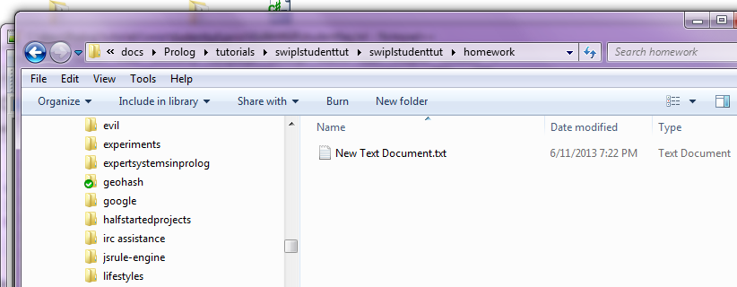
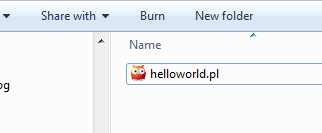
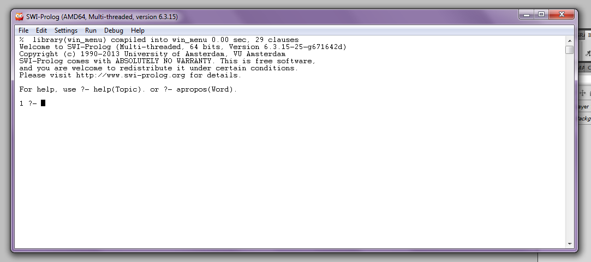
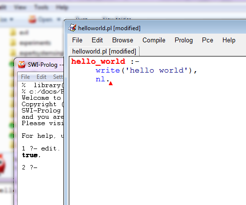
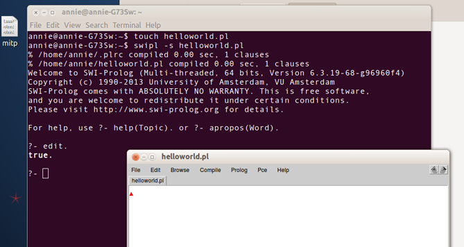

Frequently Asked Questions for ##Prolog
Anne Ogborn <annie66us@yahoo.com> :Author Initials: AO :Revision: 1.1 :Revision: 1.1 :Date: April 2, 2016 :toc2: :icons: :numbered: :website: http://www.pathwayslms.com/swipltuts/ :theme: pathways Anne Ogborn <annie66us@yahoo.com> v0.1 June 2013 v1.1 April 2016 - Made topic titles clearer
There are about 100,000 students each semester who take a programming languages class that includes some basic Prolog.
There are about 5000 commercial Prolog programmers in the entire world, and 3500 or so researchers who use Prolog (these numbers are completely wild guesses).
The small community means if you discover the great fun and power of Prolog and fall in love with it, we’ll take you to our breast. BUT…
In their own self defense, regular denizens of ##prolog will definitely ignore you if you ignore the five C’s -
- correct
-
Accurately reflects what you really want to know
- complete
-
We have all the info we need, not just the fragment you’re sure is the problem.
- concise
-
Yes, this is in tension with complete, but you can find the balance.
- clear
-
Clarify the question in your own mind, then express it with literate English.
- courteous
-
We don’t want people to 叩头 (Google it! It’s good practice!) to us. We do, on the other hand, think that abuse is uncalled for.
-
Understand what you really want to do. Don’t ask about getting the last 3 characters in a string if you want the file extension.
-
Do you understand the homework problem, let alone how to answer it?
-
Differentiate between goals and implementation.
-
If you’re asking about an implementation detail instead of the goal in an unfamiliar language, you’re almost certainly asking the wrong question.
-
Don’t come to us with random weird way of doing something simple and instead of taking advice that you want really simple thing insist that we help you with random weird way. Goals, not methods (and a little humility).
-
Prolog can indeed handle "normal" programming tasks. It is rarely necessary to wrap it in C++ or Java wrappers. Please don’t show up with a simple Prolog program, struggling with Prolog basics, and expect us to talk you through JPL or C\++ interface libs (which are as hairy as such low level glue libs usually are). If you do need to integrate Prolog in an existing system, usually it can be done over sockets, pipes, or other simple alternative. Ask advice in the channel about the best way to go about it.
-
Don’t ask for help setting up complex development environments when you’re a student and only will be writing 50 line programs. SWI-Prolog has a built-in editor that’s entirely adequate. We’re not going to help you get swipl running on Netbeans on a Mac, even if NetBeans is the only editor you’ve ever seen.
-
You need to give us a complete program, not a fragment. Provide the minimal, complete expression of whatever your problem is.
-
Give us code that runs, not a mangled fragment. We actually might try to run it.
-
In Prolog code is data and vice versa. A program that depends on some data we don’t have isn’t complete.
-
Don’t give us a long diatribe about how hard you’ve worked on this, how you figured out that case matters, etc ad nauseum.
-
Don’t dump a thousand lines of code and expect people to work it all out for you. Write a small sample that demonstrates the problem. You may find that in making the minimal example you’ll understand your problem anyway.
-
Don’t paste your code into irc one line at a time so it’s all jumbled. Use Pastebin or CollabEdit or gist or something.
-
Make sure your code’s properly indented and has reasonable variable names. About 10% of the questions asked in ##prolog are solved by the person asking them when we insist they go away and clean up the code first.
-
Use descriptive variable names. Prolog atoms are lowercase, Variables Are Propercase, and the compiler cares!. this_is_a_good_atom_name WhileThisIsHowYouWriteVariables. If you can’t come up with descriptive variable names, you don’t understand the problem and we can’t help you.
-
Don’t ask questions you could have discovered the answers to with minimal searching. Before asking Whats the library call to do… questions, always check the search box on SWI-Prolog (Or the website for your version of Prolog), and use Google. Before asking any question, search Stack Overflow. This is courteous (it doesn’t waste our time), and will help you think clearly about the question.
-
Don’t ask questions that clearly indicate you haven’t read the textbook. We don’t mind if you’re confused - Prolog’s mind warping! But you need to make a reasonable effort to understand the material first, not use us for not having wanted to show up for that 8am CS 302 class. Reasonable: I read the chapter on cut, read this website tutorial on cut, typed in a bunch of examples, and completely don’t get how to program if I completely undo my program each time. Unreasonable: What’s this exclamation point thing?
-
We do not exist to serve you. We don’t mind helping, but we do mind being taken for granted. Every moment spent answering questions is a moment we’re not coding.
-
Don’t ask permission to ask. The whole point of the channel is to ask and answer questions about Prolog.
-
It’s a slow moving channel. Instant answers are unlikely. (So don’t leave your homework for the last second.) Ask your question and then wait. Just because there is channel activity doesn’t mean people who know your answer are on now. If you’re asking about an obscure part of the language it can take days before someone answers. Check one of the many sites that log the channel.
-
We heard you the first time. Don’t spam 43 channels. Don’t wait 14.8 seconds, then storm off in a snit with a sarcastic quip about how helpful people are being.
-
Don’t ask questions of the form "how do I…" followed by your class assignment, copy/pasted direct, complete with assignment number. We enjoy doing your homework, after all. Your professors, who probably read the channel, enjoy other people doing your homework for you as well.
-
Our purpose on earth is not to make up for your instructor’s failings. You’re paying for a class, ask the guy/gal getting paid.
-
Have a sense of proportion. Having never used Prolog before, don’t announce you’re doing some obviously deep hackery like porting SWI-Prolog onto the JVM, and then ask for our help.
-
Don’t brag how you’re going to make a human level AI program. Don’t come in and ask beginner questions while being secretive about what you’re doing like it’s some top secret thing. Most of us work in or around AI. You’re not fooling us. AI researchers know Prolog already.
-
Don’t tell us how Python/Java/Cobol/etc is so much better. We’re mostly language geeks and love discussing the pros and cons of various languages, including Prolog, but expressing your low opinion of Prolog and loudly bemoaning being forced to understand it won’t convince us you’ve got the broad and searching mind we’re looking for.
-
Don’t make crude jokes, have an offensive nick, or generally be somebody we wouldn’t want to share time with. That won’t convince us of the broad and searching thing either. Sexist humor/remarks won’t fly. If you aren’t ready for the grownup table, you’re not ready for ##prolog.
-
After we spend 30 minutes solving your complex issue, don’t kill the channel immediately without saying thanks. Maybe our answer only looked right, and you’ll be back in 10 minutes.
If you’re one of the many extremely bright people who regularly hangs out on ##prolog and answers questions, I have a plea.
I’ve seen plenty of misbehavior from students. But I’ve also seen plenty of regulars answer reasonable, simple beginner questions with category theory. If they ask about functions, suspect they mean predicates until otherwise proven. I don’t think you’re intending to be mean, but when you demonstrate your intellect or highlight a fascinating corner of Prolog, in effect you’re ignoring the poor petitioner.
So I do invite you to consider giving the simple, obvious answer first. It’s often what the asker needs.
There are a million ways to explain anything. If a new Prolog user is in the channel and someone is already helping them, refrain, please from offering your own much cooler/faster/more monadic/etc solution. I’d suggest to you that no one can learn as well from a cacaphony of competing voices as from a single clear voice.
When helping on the channel I often have a strategy for helping the student planned out. Random offers of explanation/advice/solutions are likely to disrupt those plans.
I’d offer this "Rule of the Road" - in sailing the Rules of the Road establish which of two ships approaching on a collision course should turn. I’d suggest our rule of the road is "If someone is already engaging the new Prolog programmer, let them continue."
All that out of the way, On to the FAQ
I recommend SWI-Prolog. There are many good things to be said about other implementations of Prolog. Some are faster in some circumstances, have nice constraint libraries, or other attractive features, but you won’t be using any of those things as a beginning student. Installation on windows and mac is simple, there are installers for mac and windows and packages for most linux distros.
SWI-Prolog has a built in IDE with a graphical debugger and syntax coloring editor.
Further, it’s the most popular Prolog for commercial and research use, so the person you’re talking to probably can answer questions about SWI more easily.
Bias warning - one of the authors of this FAQ is a peripheral contributor to SWI-Prolog.
An old tradition in computing is to write a program that prints hello world when one starts using a new language. Here’s how to do it in SWI-Prolog.
Right click in the file browser and make a new text document.

Rename the document helloworld.pl It should give a warning, and if you say go ahead and change, it will change the icon to an orange owl.

Double click on the document. SWI-Prolog should start up and show you a console like this

The ?- prompt is called a top level prompt. In Prolog we have facts and rules in files that we consult. Then we make queries about our database by typing them in at the top level.
Query
?-edit.That means "type e then d then i then t then a period then a newline into the console"
The pceEmacs editor pops up in a new window. This editor is a clone of emacs.

Type your first program into the editor.
hello_world :-
write('hello world'),
nl.Type ctrl-x ctrl-s to save your program.
type ctrl-c ctrl-m to make your program.
Making the program alters the database by adding a new rule, one that defines whether hello_world is true (it is), and as a side effect prints out hello world.
Now ask Prolog if hello_world is true by querying
?- hello_world.and it prints hello world on the console and assures you that it’s indeed true.
These directions are for linux. Mac is similar.
In a terminal
touch helloworld.pl
swipl -s helloworld.plSWI-Prolog should start up and look like this
anniepoo@localhost:~$ touch helloworld.pl
anniepoo@localhost:~$ swipl -s helloworld.pl
% /home/anniepoo/helloworld.pl compiled 0.00 sec, 1 clauses
Welcome to SWI-Prolog (Multi-threaded, 64 bits, Version 6.3.15-115-g79fdabe)
Copyright (c) 1990-2013 University of Amsterdam, VU Amsterdam
SWI-Prolog comes with ABSOLUTELY NO WARRANTY. This is free software,
and you are welcome to redistribute it under certain conditions.
Please visit http://www.swi-prolog.org for details.
For help, use ?- help(Topic). or ?- apropos(Word).
?- <-- you'll start typing hereThe ?- prompt is called a top level prompt. In Prolog we have facts and rules in files that we consult. Then we make queries about our database by typing into the top level.
Query
?-edit.That means "type e then d then i then t then a period then a newline into the terminal"
The pceEmacs editor pops up in a new X window. This editor is a clone of emacs.

Type your first program into the editor.
hello_world :-
write('hello world'),
nl.Type ctrl-x ctrl-s to save your program.
type ctrl-c ctrl-m to make your program.
Making the program alters the database by adding a new rule, one that defines whether hello_world is true (it is), and as a side effect prints out hello world.
Now ask Prolog if hello_world is true by querying
?- hello_world.and it prints hello world on the console and assures you that it’s indeed true.
% comments start with a percent sign
%% don't double them, you've just set off the doxygen style autodoc thing
% pldoc is cool, but you want to know why it's yelling at you about comment syntax
/*
you can make C style comments too
*/
% case is important. This is not gonna work
DarnProlog(X) :- blah, blah.
% editor cheatsheet
% you can set ctrl-c, ctrl-v shortcuts in the linux editor
% ctrl-x ctrl-s saves
% ctrl-c ctrl-m compiles and updates your code.
% Prolog's typeless, usually you don't need to cast.
% output. There's a printf style predicate. Uses ~ not % - fouls me up occasionally
% takes two args. First is an atom that's a format string,
% second is a list of arguments
format('~s~n', ["Code strings need twiddle s. The twiddle n adds a newline"]).
% pretty much everything else can be handled with twiddle w
format('atom: ~w~ninteger: ~w~nfloat: ~w~nlist: ~w~n', [hello, 1, 3.7, [a, list, of, things]]).That’s not a repl, that’s a top level. You’re typing in queries. Type code into a file. If you really do want to enter code from the top level, you can use assert:
?- assert((mypred(X) :- write(>>>),writeln(X))).Note the extra parens.
But I don’t recommend it.
SWI-Prolog’s pretty reliable. Here’s ways to hang it:
14 ?- assert(mep(7)).
true.
15 ?- assert(mep(3)).
true.
16 ?- mep(X).
X = 7 <-- caret is here, blinking, but no new ?-This is not hung. Prolog gives you all the solutions. It’s offered you 7, and is waiting for you to say if you want more. ; means more. . means stop giving me solutions.
16 ?- mep(X).
X = 7 ;
X = 3.
17 ?-Here’s a program that loops infinitely.
bad_count_to_ten(X) :-
NX is X + 1,
bad_count_to_ten(NX).
bad_count_to_ten(10).SWI-Prolog hangs but you can break out with ctrl-C, then answer the Action (h for help) ? with a
A ham handed attempt to fix it
uses_lots_of_memory(X) :-
uses_lots_of_memory(NX),
NX is X + 1.
uses_lots_of_memory(10).% c:/docs/prolog/tutorials/faq/faqsample compiled 0.00 sec, 3 clauses
3 ?- uses_lots_of_memory(1).
ERROR: Out of local stack
Exception: (1,763,388) uses_lots_of_memory(_G1760) ?Both are out of control recursion. They call themselves over and over without limit.
-
At SWI-Prolog Website use the search box.
-
The search doesn’t cover some things. Google can be a friend.
Query
?- tspy(mypred).Now when mypred is unified you’ll see a nice graphical debugger.
-
space steps "in"
-
s skips "over"
-
l runs until another breakpoint is hit
-
a aborts
Query nospy(mypred) to get rid of gthe breakpoint.
Prolog’s infinitely weird. It has no control structures, backs up, doesn’t have functions or return, and now you’re telling me this language doesn’t have STRINGS for God’s sake?
Yup. Well, SWI-Prolog added strings in revision 7.
The first one used to be a "codes", and your class might still be taught this way. It’s actually syntactic sugar for a list of ascii codes as integers.
15 ?- X = "hello".
X = [104, 101, 108, 108, 111].Holy smokes! This obviously can be a serious pain to debug. You can get sugar on your output.
23 ?- portray_text(true).
true.
24 ?- X = "hello".
X = "hello". <-- still a list of ascii codesAvoiding the space wasted with codes style strings, SWI-Prolog revision 7 started making double_quoted strings be true Strings, stored compactly.
This is an atom. Atoms are interned strings. You hear in WWII stories how somebody was shot down over neutral territory and interned - stuck there until the war was over.
Same thing here - atoms don’t change. Atoms are for strings you’re going to move about as whole chunks. Identifiers start with lowercase letters, or are made up of all special characters, they’re atoms.
By convention atoms have all lower names with underscores between words.
i_am_a_good_atom
iAmAnAtomButDontDoThis
====> is also an atom.
( not an atom (part of Prolog's basic syntax)But you can print an atom. What if I want to print my real name?
I want an atom, but I want to put a space in it (normally not allowed) and want an uppercase first letter.
25 ?- writeln('Anne Ogborn').
Anne Ogborn
true.
26 ?-Anything surrounded by single quotes is an atom, whatever characters are in it.
( not an atom (part of Prolog's basic syntax)
'(' an atom
'IAmAnAtom'And yes, atoms are what predicate names are. So
26 ?- assert(('(((('(X) :- writeln(X))).
true.
27 ?- '(((('('((((').
((((
true.Yup, that’s a predicate whose name is four open parens.
That’s a variable. It’s a container for data. Variables start with _ (underscore) or an uppercase letter.
An underscore by itself is special - it’s a variable whose value we don’t care about. Variables that start with an underscore \_AVariable are also ones we don’t care about, by convention, but Prolog only treats underscore by itself as special.
Me: "Buy me an Umbrella"
Hubby: "What color?"
Me: "I don’t care."
umbrella(_, Umbrella). % matches an umbrella of any color
umbrella(Color, sallys_umbrella). % matches with the color of sallys umbrella
umbrella(_, sallys_umbrella). % matches if sally *has* an umbrella of any color
umbrella(red, Umbrella). % matches only red umbrellasRemember, they kept telling you you’re not executing instructions, you’re looking for proofs?
Variables are like variables in high school algebra, not like in C.
High school math problem:
3*X^2 + 4*X + 1 = 0
and you crank for a while and figure out
X = - 1/3 or X = -1
Predicate to find the roots
quadratic_roots(A,B,C,X) :-
X is ( - B + sqrt(B * B - 4 * A * C) ) / ( 2 * A).
quadratic_roots(A,B,C,X) :-
X is ( - B - sqrt(B * B - 4 * A * C) ) / ( 2 * A).4 ?- quadratic_roots(3,4,1,X).
X = -0.3333333333333333 ;
X = -1.0.The proof works if X is -0.3333 or -1
A,B,C, and X are variables. A,B, and C are grounded when we call quadratic_roots - A’s 3, we just said so. X, we don’t know, could be anything.
When we leave quadratic_roots, X is bound - it’s got a value (-0.33333 in this case). It will also bind to -1. But it won’t bind to -2.0
Sometimes after the last solution, when you expect prolog to just stop, it instead waits for you to type ; one more time. So something like
?- member(a, [a, b, c]).
true ; <-- waits for me to type the ;
false.This is just because Prolog’s not infinitely smart about knowing if it’s got another solution. A story to illustrate:
A woman walks into a hardware store and says to the owner "I’m driving in fence posts, I need a really big hammer" The owner shows her a hammer. She says "No, I need a bigger hammer than that". The owner says "hold on, I have a bigger one in back".
He comes back a couple minutes later and says "Sorry, must have sold it. That’s the biggest we have."
The first solution is offered (the first hammer). She rejects it, and the storeowner tries again. This time he fails. He thought he might have another solution, but he doesn’t.
Students often try to eliminate these. They have no effect on execution.
I’ve written a predicate. I can get a bunch of different solutions from it by typing ; repeatedly. I want all those solutions in a list.
What you want is bagof
1 ?- bagof(A, member(A, [foo, fum, fee]), List).
List = [foo, fum, fee].Because Prolog gives back all the proofs of a thing. In the family tree example, someone is a sibling if they have a mother in common, or have a father in common. I’m my brother’s sibling both because we share a mother and because we share a father. So my brother appears twice in my list of siblings.
setof is like bagof, but removes repeats and sorts the items.
Many many times one wants to work on a problem a bit at a time. Traversing a list and printing it’s elements is a typical example.
print_list([]). % there's nothing more to do with an empty list
print_list([Head|Tail]) :-
writeln(Head), % do a little bit
print_list(Tail). % do the restYes. 40% of Australia’s stock trading is done via a large Prolog application.
The web server that serves the SWI-Prolog web site is itself written in Prolog.
There are 3D libraries, machine vision libraries, and audio applications in Prolog.
There is a SPARQL server in Prolog.
That’s a very good question. You should ask your instructor (and demand more realistic education in Prolog).
Take your choice:
-
Sshhh…. it’s our little secret.
-
Why give away your competitive advantage?
-
Uh, that’s classified (search for Prolog help wanted ads to understand this)
A tutorial on the web framework for SWI-Prolog is here.
Yes, because you’re asking if the term +(2,2) can be unified with the term 4. It can’t. They’re different.
All code in Prolog can be treated as data apart from any meaning as programs. Everything is a term. Some terms are executable.
If you want it to try to perform arithmetic you need numeric equals
Arithmetic equals
2 ?- 4 =:= 2 + 2.
true.Unifies
3 ?- 4 = 2 + 2.
false.is
This is the closest Prolog has to assignment.
Succeeds only if the left side is the number the right side evaluates to.
Normally is is called with an unbound variable on it’s left side and an expression on the right.
8 ?- X is 2 + 2.
X = 4.
% works because sin(pi/2) is indeed 1.0
9 ?- 1.0 is sin(pi/2).
true.
% fails because sin always returns a float
10 ?- 1 is sin(pi/2).
false.== is 'Are the same place in the standard order'These two terms are either two things that aren’t variables and are =, or they are variables and they share. I’m a fairly experienced Prolog programmer. I just finished ten minutes of mind bending attempt to understand this operator. I’ve never used it. So, as a beginner, you can ignore it. It is not what you want.
6 ?- X = Y.
X = Y.
7 ?- X == Y.
false.Wrong! Nothing has a return value. If you’re coming from Java, it’s like everything is void return type.
Instead of a return, Prolog predicates succeed or fail. If they fail, Prolog backs up, undoing bindings, (this is backtracking) until it reaches the last choice point. Then it tries again with the next choice.
true is an atom, and also a basic predicate that succeeds.
false is an atom but not a predicate.
fail is an atom and a basic predicate that fails.
There is an operator, →. Avoid it as a newbie. It’s not really if, it’s more like the ?: operator in C++.
Instead, use case based reasoning.
Suppose I want to make a predicate that prints a die roll. But instead of just the number, when it’s 2 I want it to print snake eyes. In Java it’d be something like
void print_roll(int roll) {
if(roll == 2)
System.out.writeln("snake eyes");
else
System.out.writeln(roll);
}
}In Prolog we can do the same thing by
print_roll(2) :-
writeln('snake eyes').
print_roll(Roll) :-
writeln(Roll).which looks slicker - each case is handled on it’s own. So far it’s a pretty minor whoo hoo.
If we have a 2, we can unify with the first head, and print snake eyes. Another way to print the dice roll is just to print the number.
This works fine as long as we don’t backtrack into print_roll. If we do, then it’ll find another way to print a roll of 2 - just as a number, which we don’t want. Put the above in a file, consult it, and query print_roll(2). When it prints, it’ll stop, waiting. hit ; to get the next solution.
4 ?- print_roll(2).
snake eyes
true ;
2 <--- Ooops!
true.Oops, not supposed to print number 2 as a solution. We can fix that.
print_roll(2) :-
writeln('snake eyes').
print_roll(Roll) :-
Roll \= 2,
writeln(Roll).That works.
5 ?- print_roll(2).
snake eyes
true ;
false.Some bright soul points out that 12 is usually called boxcars. OK, we can add that
print_roll(2) :-
writeln('snake eyes').
print_roll(12) :-
writeln('boxcars').
print_roll(Roll) :-
Roll \= 2,
Roll \= 12,
writeln(Roll).Well, now we have to make sure Roll isn’t 2, or 12, and this clearly isn’t ideal as we come up with more names. At this point the annoying marketing guy in the office lets us know that 4 is "Little Joe from Kokomo".
Enter the cut. The cut, or !, means forget other solutions - so, if you figure out it’s Little Joe from Kokomo, don’t try anything else.
print_roll(2) :-
!,
writeln('snake eyes').
print_roll(4) :-
!,
writeln('Little Joe From Kokomo').
print_roll(12) :-
!,
writeln('boxcars').
print_roll(Roll) :-
writeln(Roll).Great - well, now we’re happy with our predicate, and go do other things with our great craps game.
All is good, except we have a few places where it tries to print numbers that aren’t die rolls at all. Until we get those bugs out, lets just print not a dice roll for those.
print_roll(2) :-
!,
writeln('snake eyes').
print_roll(4) :-
!,
writeln('Little Joe From Kokomo').
print_roll(12) :-
!,
writeln('boxcars').
% do this case next so it's not caught by the catch all
print_roll(Roll) :-
Roll < 2 ... wish I had an or... Roll > 12,
writeln('not a roll').
print_roll(Roll) :-
writeln(Roll).Well, at first glance we want an or. But even if we have one we end up with one case that’s got some more complex logic in it, and we’re headed back down the road to heck of those curly brace languages with their complicated nested logic. But we really have two different cases.
print_roll(2) :-
!,
writeln('snake eyes').
print_roll(4) :-
!,
writeln('Little Joe From Kokomo').
print_roll(12) :-
!,
writeln('boxcars').
% do this case next so it's not caught by the catch all
print_roll(Roll) :-
Roll < 2,
!,
writeln('not a roll').
print_roll(Roll) :-
Roll > 12,
!,
writeln('not a roll').
print_roll(Roll) :-
writeln(Roll).At the expense of slightly repeating ourselves we’re back to the simple cases.
Any complex set of nested ifs can be flattened into this form.
Now, some seedy character may offer you the → operator. It’s a way of making a branch within a clause.
Don’t Do This
print_roll(Roll) :-
( Roll < 2 ->
writeln('not a roll')
;
writeln(Roll)
).Noobs come to us with programs like this
print_roll(Roll) :-
( Roll < 2 ->
writeln('not a roll')
;
( Roll > 12 ->
writeln('not a roll')
;
( Roll =:= 12 ->
writeln('boxcars')
;
( Roll =:= 2 ->
writeln('snake eyes')
;
writeln(Roll)
)
)
)
).and wonder why they have bugs… just say no to the → and ; operators.
(PS, the above has a bug, the 4 case is missing. It might have other bugs as well. Who knows. I’m fairly confident the reasonable cases above are correct just by inspection.)
Set your throttle to max, go into a slight dive, pull back on the stick, and climb, keeping your airspeed well above stall. At the top of the loop cut back on the throttle, keep the stick back, slowly push it forward as you descend.
Oh, probably not…
Actually, there’s three ways to do it.
Replace the loop with recursion. See the standard recursion pattern above.
recursive_countdown(0) :- writeln(0).
recursive_countdown(X) :-
writeln(X),
NX is X - 1,
recursive_countdown(NX).Prolog will backtrack and try again with a different solution. Hey, that’s a loop!
Between succeeds when it’s 3rd argument is an integer from it’s first to it’s last.
13 ?- between(1,5,X).
X = 1 ;
X = 2 ;
X = 3 ;
X = 4 ;
X = 5.This predicate is doomed to fail until A reaches 10.
failure_driven_countdown :-
between(0,10,A),
N is 10 - A,
writeln(N),
A = 10.Which is a good thing in this case. It’ll keep trying different values of A, and printing the number we want along the way, until A reaches 10.
This is an example of how to pass things up and down the recursion stack.
Say you have some numbers in a list. You want to mod them with 12 and add them.
Takes a list in and binds Sum to the sum of the lists elements mod 12
sum_of_modded(List, Sum) :-
sum_of_modded_(List, 0, Sum).takes a list and a starting value in, and binds Sum to the sum of the lists elements mod 12 adding an _ at end of name is common for helper predicates like this. If list is empty, reasonably the sum is just the start value.
sum_of_modded_([], Start, Start).second clause, for case where we have at least one element.
[Head | Tail] only unifies if we have at least one element.
notice that we’re leaving Sum alone. Thinking Logically, Sum is bound by the recursive call. Thinking procedurally, Sum will be bound when the recursion hits the bottom and the first clause unifies
sum_of_modded_([Head | Tail], Start, Sum) :-
NewStart is Start + Head mod 12,
sum_of_modded(Tail, NewStart, Sum).This pattern is very common. It happens not just with lists, but with anything you’d process sequentially, like reading lines from a file and summing them, or summing some power series.